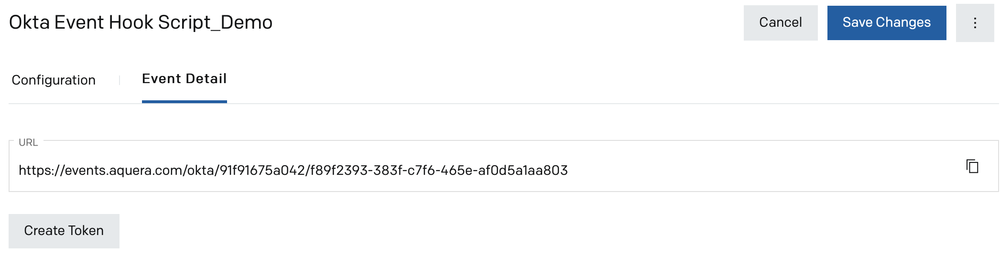
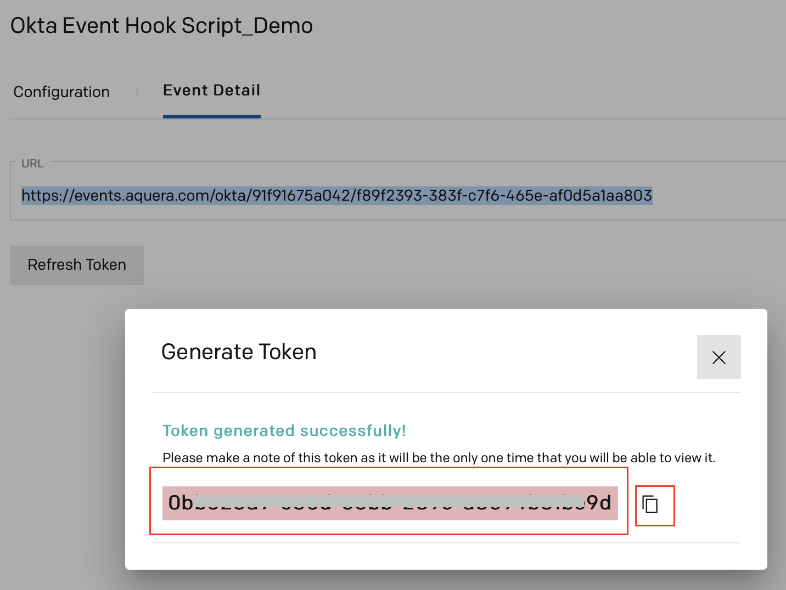
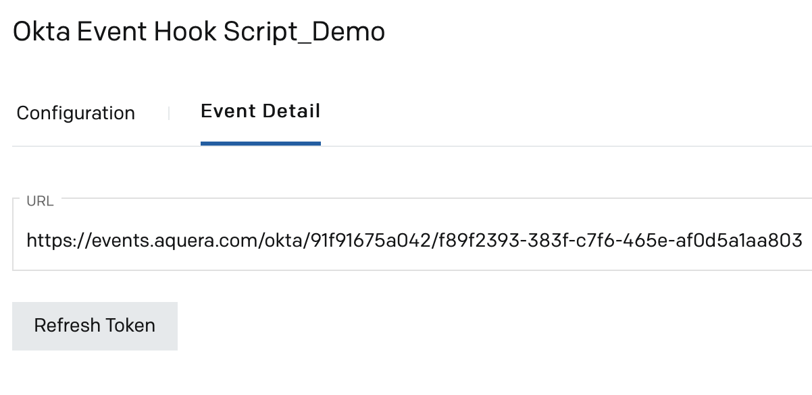
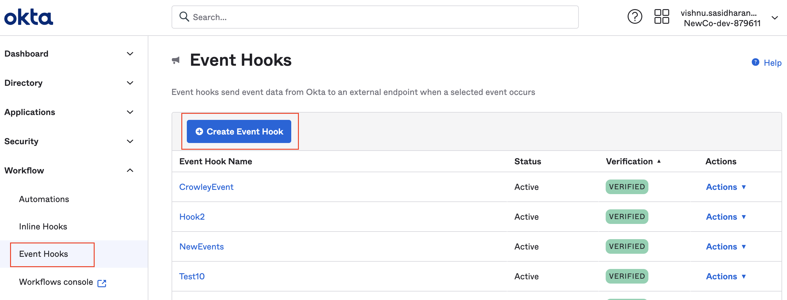
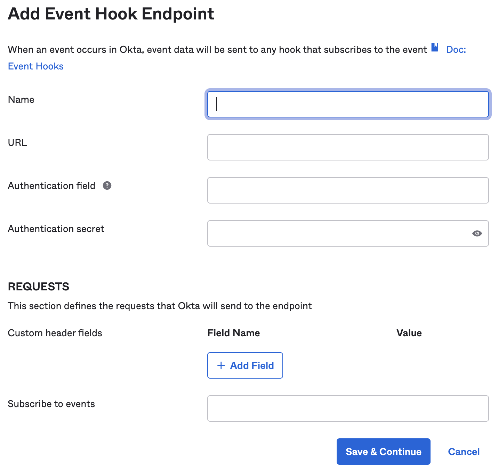
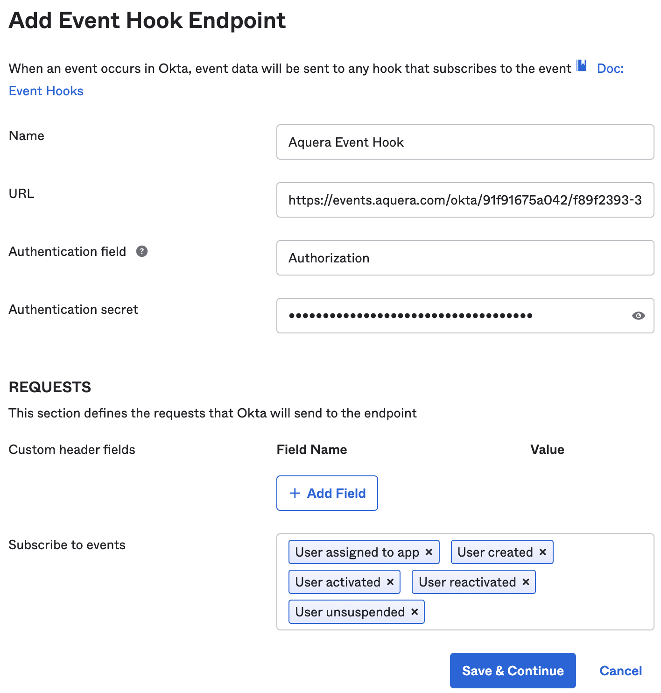

Okta Event Hook Script Orchestration Setup Guide
Overview
Okta Event hooks are outbound calls triggered at specific events from Okta to a custom code. Unlike Okta Inline Hooks, Okta event hooks are asynchronous and the Okta process flow continues after sending the call, without waiting for a response from the called service.
The Okta Event Hook Script Orchestration by Aquera is used to set up custom scripts that must be executed for specific events in Okta. This guide explains how to set up Okta Event Hook Script orchestration in Aquera. It also explains the procedure to set up event hooks in Okta and integrate it with Aquera's Okta Event Hook Script orchestration.
Note: It is highly recommended to request the Okta Support team to increase the Event Hook time-out from 3 to 10 seconds.
Setting Up Okta Event Hook Script Orchestration
The Okta Event Hook Script orchestration must be first set up in Aquera with the scripts to be executed when some specific events are triggered in Okta.
An event from Okta will be passed to the orchestration script as a variable. The name of the variable to be used in the script is event.
- Log in to the Aquera Admin portal.
- Navigate to the Orchestrations page and click Create Orchestration.
The Add Orchestration pop-up window is displayed. - Provide a Name for the orchestration.
- Select Okta Event Hook Script from the orchestration type drop-down list.
- Click Done. The Configuration tab is displayed.
- Click Add Application and select the Okta application of which you want to process the events through the orchestration.
- Enter a variable name that you want to use in the script to refer to the Okta application.
- In the script editor area, enter the script to be executed for processing the inbound events from Okta. Here is a sample script to process the inbound event from Okta:
log.info(JSON.stringify(event, null, 4));
- Click Create at the top right corner of the page to create the orchestration.
- Click the Event Detail tab. A URL is displayed on the page.

This URL will have to be copied and configured as the event hook endpoint when you set up event hooks in Okta. For details, refer to the Setting up Event Hooks in Okta section.
- Click Create Token. A token is generated and displayed on the Generate Token pop-up window.

- Copy the token and save it. This token will have to be configured when you set up event hooks in Okta. For details, refer to the Setting up Event Hooks in Okta section.
- Close the pop-up window.

In case you have lost the generated token, you can click Refresh Token to generate a new token. Then, this new token will have to be configured in Okta.
- Click Save Changes.
Setting up Event Hooks in Okta
Event hooks are outbound calls from Okta, sent when specified events occur for the user accounts. These are HTTPS REST calls containing information about the events in JSON objects, which are sent to the event URL configured by you.
- Log in to Okta.
- Navigate to Admin > Workflow > Event Hooks. The Event Hooks page is displayed.

- Click Create Event Hook. The Add Event Hook Endpoint window is displayed.

- Enter values in the following fields:
Field Description Name Enter any name for the event hook. URL Copy the URL from the Event Detail tab of the Okta Event Hook Script orchestration on the Aquera Admin portal and paste it here. Refer to the Setting Up Okta Event Hook Script Orchestration section for details. Authentication field Enter Authorization, which is the name of the authorization header.
Note: Okta Event Hooks use header-based authentication.
Authentication secret Copy the token that was generated for the Okta Event Hook Script orchestration from the Aquera Admin console and paste it here. Refer to the Setting Up Okta Event Hook Script Orchestration section for details.
Requests Custom header fields Optional field name/value pairs to be sent with the request to Aquera event hook orchestration.
Subscribe to events Select the types of events that must be sent to the orchestration.

- Click Save & Continue. The event hook is now active.